Projects
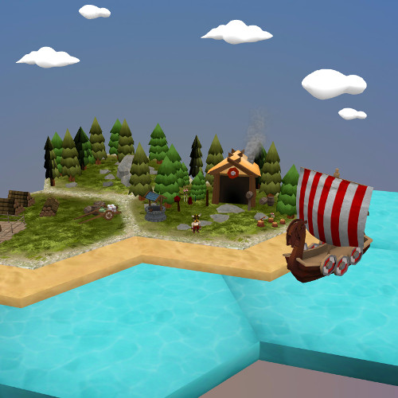
Microsoft Experiences '16
Speaker during MS Experiences 2016 - 3D on the web with Babylon.js. Slides can be found on Github.
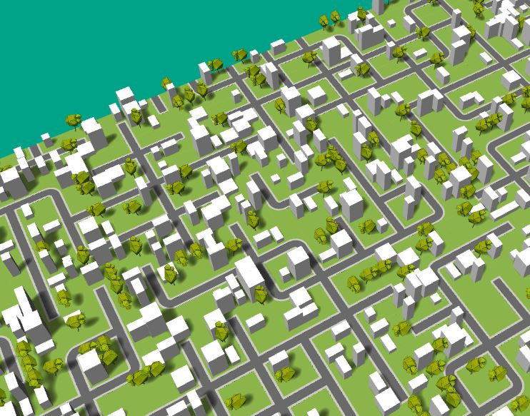
Procedural City
A procedural city built with Babylon.js
Destination Mars
Development of the front page of 'Destination Mars' in Babylon.js
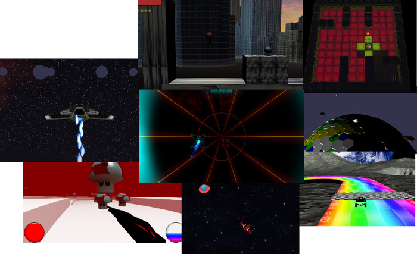
Isart Digital - 2015
Some games made by students at Isart Digital during my classes (20 hours during September-December)
Isart Digital website
Isart Digital website
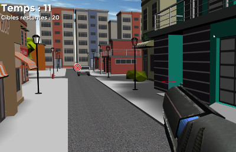
FPS
A simple game made to illustrate an article in the magazine 'Programmez!' - n°198 Summer 2016
Official presentation on 'Programmez!' website - in french
Official presentation on 'Programmez!' website - in french
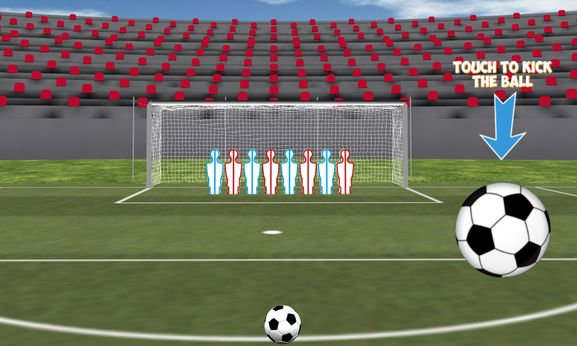
Kicker
A very little game made for the Babylon.js February Challenge
Swarm
A little 3D scene made for the #screensaverjam
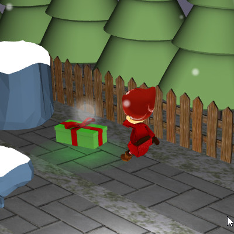
Christmas Runner
A Babylon.js game for Christmas
bGUI
A Babylon.js extension to create a GUI without DOM elements
Learning Babylon.js - 160 pages e-book
Learn the basics of the 3D framework Babylon.js by creating a whole game.
This 160 pages e-book will teach you everything you need to know about Babylon.js to get the most out of it!
This 160 pages e-book will teach you everything you need to know about Babylon.js to get the most out of it!
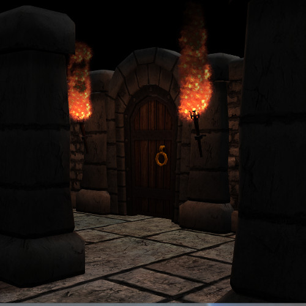
Dungeon
A 3D demo scene (no gameplay here), exported from 3DSMax to Babylon.js.
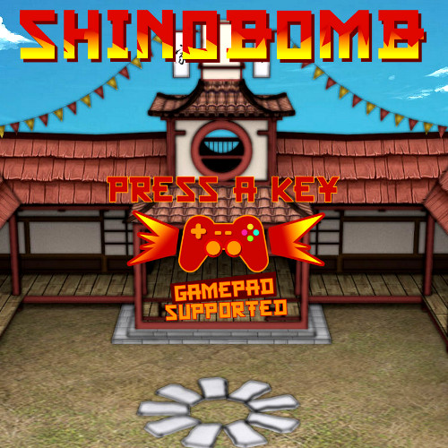
Shinobomb
A 3D remake of the classic game Bomberman, powered by Babylon.js.
The game supports up to 4 players with gamepads. It can also be played with a keyboard (up to two players on the same keyboard).
The game supports up to 4 players with gamepads. It can also be played with a keyboard (up to two players on the same keyboard).
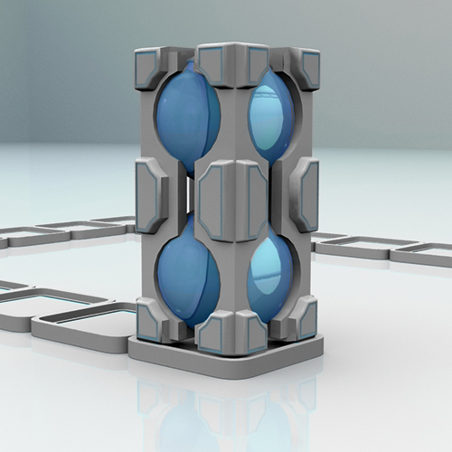
Block
A 3D puzzle game, made with Babylon.js.
Play with the arrow keys and try to finish all levels.
Play with the arrow keys and try to finish all levels.
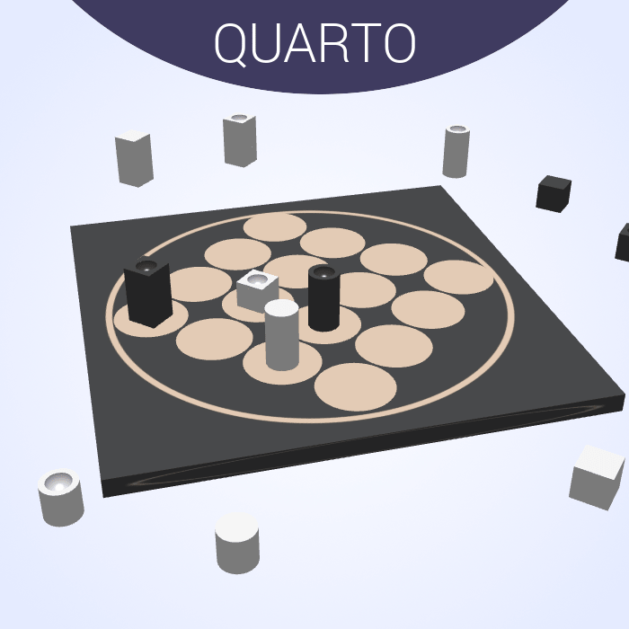
Quarto
A 3D remake of the classic board game Quarto
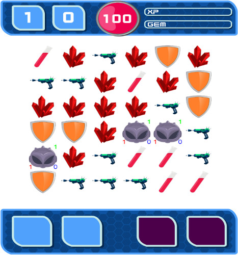
UFO
A 2D game made with phaser.js.